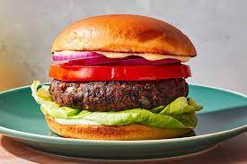

Vegan Black Bean Burgers

Description
Between homemade, restaurant, and store-bought, these are the best black bean burgers I've ever tried. I'm confident you'll be satisfied with this bean burger recipe. They're big, thick, hearty, and flavorful.
The trick is to partially dry out the black beans so the burgers do not taste mushy. Grill or bake the black bean burgers and enjoy on a bun, plain, or on a salad.
Ingredients
- 2 (14 ounce) cans of Black Beans, drained, rinsed, and patted dry
- 1 tablespoon of extra virgin Olive Oil
- 3/4 cup of finely chopped Bell Pepper (1/2 of a pepper)
- 1 cup of finely chopped Yellow Onion (1/2 of a large onion)
- 3 Garlic Cloves, minced (about 1 Tablespoon)
- 1 and 1/2 teaspoons of Ground Cumin
- 1 teaspoon of Chili Powder
- 1/2 teaspoon of Garlic Powder
- 1/4 teaspoon of Smoked Paprika
- 1/2 cup of Bread Crumbs or Oat Flour
- 1/3 cup of Mashed Sweet Potato
- 2 tablespoons of Ketchup, Mayo, or BBQ Sauce
- A pinch of Salt and Pepper
Steps
- Preheat oven to 325F. Spread beans evenly onto a lined baking sheet and bake for 15 minutes until slightly dried out.
- Meanwhile, sauté olive oil, chopped pepper, onion, and garlic over medium heat until peppers and onions are soft, about 5-6 minutes. Gently blot some of the moisture out. Then, place in a large bowl or in a food processor with the remaining ingredients (Listed above). Stir or pulse everything together.
- Then add the black beans in. Mash with a fork or pulse the mixture, leaving some larger chunks of beans.
- Form into patties- about 1/3 cup of mixture in each.
- To bake: Place patties on a parchment paper lined baking sheet and bake at 375F for 10 minutes on each side, 20 minutes total. To grill: Place patties on greased aluminum foil and grill 8 minutes on each side. Grill on medium-high heat on about 350°F.
- Serve with your favorite toppings and enjoy!